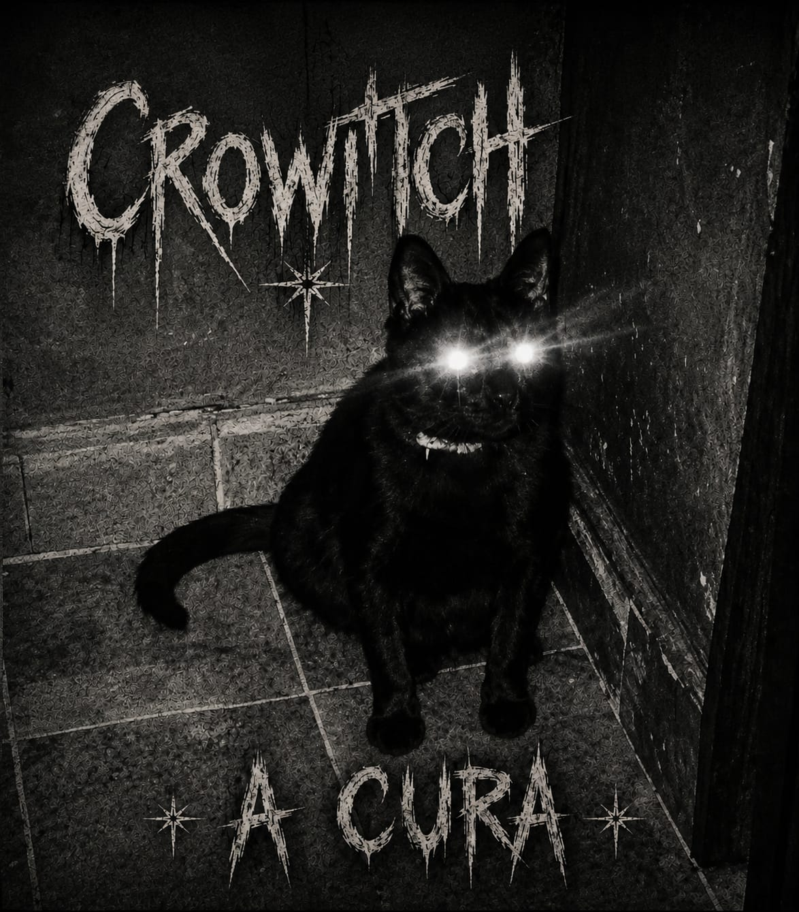

A Crowitch é uma banda autoral de rock alternativo formada por músicos de São Paulo e Guarulhos.
Com influências do grunge e do rock nacional, a banda nasceu da união de músicos com diferentes experiências na cena do rock, movidos pela vontade de criar músicas próprias e construir uma identidade musical. O projeto representa uma nova fase para seus integrantes, que deixaram de lado outros caminhos para investir em um repertório totalmente autoral.
Atualmente, a Crowitch reúne mais de 15 composições próprias e trabalha no lançamento de seus primeiros singles, dando início à construção de uma trajetória independente na cena do rock autoral. formada por Valéria (vocal), Bruce (bateria), Jerms (guitarra), Lombardo (guitarra e instrumentista) e Paiva (baixo).
